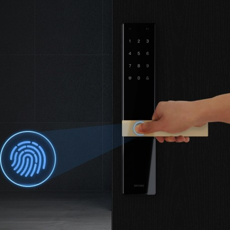
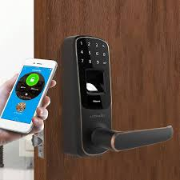
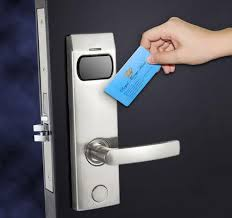

Nama Anggota Kelompok
161113729 Adi Restu Sinalsal
161112189 Ivan Darma Leo Lumban Raja
161113265 Luckman Pray Simarmata
161112421 Mahathir Muhammad Lubis
161113711 Muhammad Gibran
161111663 Rahmat Syaputra
INTRO SMART LOCK
Smart Lock adalah kunci elektromekanis yang dirancang untuk melakukan operasi mengunci dan membuka kunci pintu ketika menerima instruksi tersebut dari perangkat resmi menggunakan protokol nirkabel dan kunci kriptografi untuk menjalankan proses otorisasi.
SEJARAH SMART LOCK
Zaman Kuno : Kunci Jenis Kayu
Zaman Revolusi Industri :Kunci Jenis Gembok
Zaman Digital :Kunci Pintu Digital / Digital Door Lock
Zaman Otomatisasi Rumah : Mulai terciptanya Smart lock berfungsi dengan menggunakan Android dan selangkah lebih maju dari Kunci pintu digital.
FITUR SMART LOCK

Anda pasti pernah mendengar adanya pencurian rumah yang dilakukan dengan membobol pintu. Perampok seringkali menerobos ke dalam rumah menggunakan kunci duplikat.
Kelebihan menggunakan Smart Lock
1. Tak Khawatir Kunci Hilang Dan Tertinggal
2. Tak Perlu Bolak-Balik Cek Untuk Mengunci Pintu
3. Rumah Terlihat Lebih Estetis
4. Ada Sistem Alarm
Kekurangan menggunakan Smart Lock
1. Harga yang Mahal
2. Memerlukan Daya untuk beroperasinya SmartLock
Kesimpulan
Jadi smart lock adalah kunci pintar yang dirancang untuk mengunci dan membuka kunci secara otomatis baik itu kunci pintu , kunci otomatis rumah.